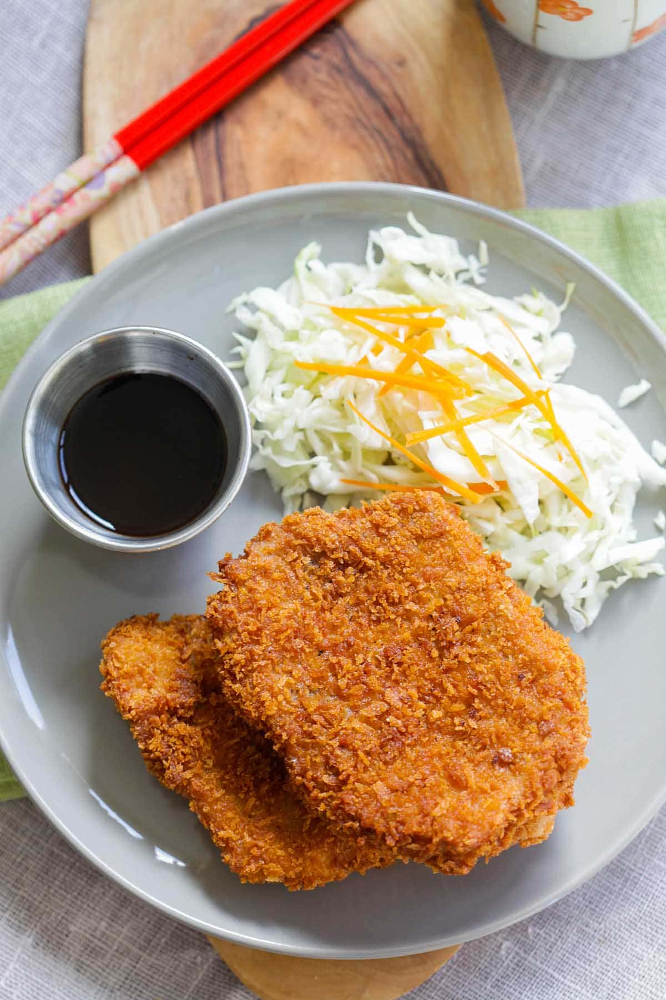

Tonkatsu
Preparation Time: 10mins
Cook Time: 10mins

Ingredients
- oil for deep-frying
- 2-3 boneless pork cutlets
- salt
- Ground black pepper
- 1/4 cup corn starch
- 1 large egg beaten
- 1 cup Japanese panko preferred or regular breadcrumbs
- shredded cabbage
- bottled tonkatsu sauce
Instructions
- Heat up a small pot of oil for deep-frying, at 350°F (176°C).
-
Rinse the pork cutlets with cold water, pat dry with paper towels, and
season with salt and black pepper. Arrange the cornstarch, egg and panko
in three separate containers, next to each other.
-
Coat a piece of the pork cutlet lightly with some cornstarch. Shake off
the excess. Dip the pork cutlet into the egg, then immediately onto the
panko.
-
Make sure the pork cutlet is evenly coated with a layer of panko. Set
aside for deep-frying. Repeat the same to the remaining pork cutlets.
-
Deep fry the pork cutlets until they turn golden brown. Remove using a
strainer and transfer to a plate lined with paper towels. Slice the
Tonkatsu into pieces and serve immediately with some shredded cabbage
and Tonkatsu sauce.